In this Lab, you will complete a final refactor of our Donation Case Study - Donation.4.0. We will build on the previous lab and add in some new features and Database Support, and an Application Object. On completion of this lab you'll be able to add Database Support to an Android Application and work with an 'Application' object.
As with the previous labs, you can download the solution/starter code for Donation.4.0.starter, or continue on with your own version.
Your current project (after renaming/copying) should looks as follows:
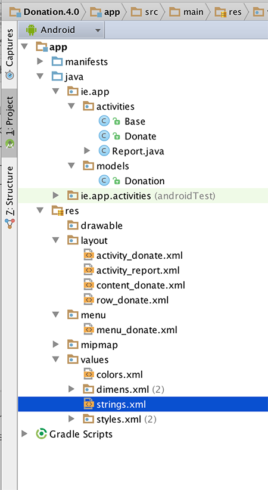
In this lab, you are required to do the following:
The following steps will guide you through these requirements, so we'll start with Menu Option.
First of all, confirm that the current Menu looks like this:
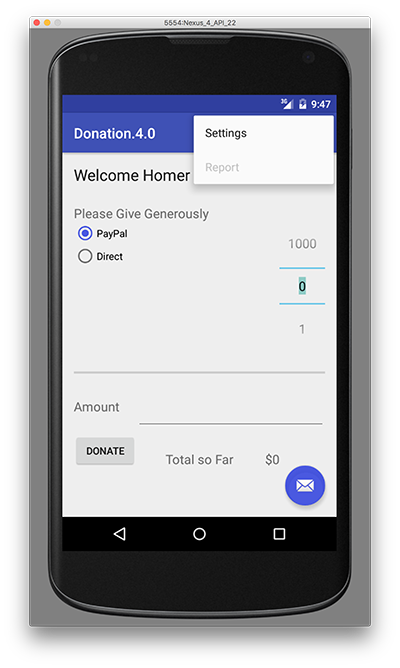
but we want something like this:
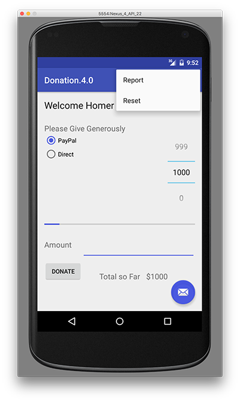
The first thing to do is add in a new resource in strings.xml (or use Android Studio (Alt + Return) to fix the string resource error if you paste in the menu item directly)
<string name="menuReset">Reset</string>and then the corresponding menu item in donate.xml
<item
android:id="@+id/menuReset"
android:orderInCategory="100"
android:showAsAction="never"
android:title="@string/menuReset"
android:onClick="reset"/>It's probably worth removing the 'Settings' menu item at this stage too, and its related method in the Base class. Next, edit Base.java and add in the following method stub
public void reset(MenuItem item) {}to ensure our app won't crash when the menu loads (and looks for a method 'reset')
Run the app again and confirm you get the following Menu :
We can't implement this menu option fully yet, so for the moment, we'll just 'reset' the target amount back to zero (0) - Step 03.
This is more of an interim step but is necessary to ensure the menu event handler for the 'Reset' option is working correctly.
First, edit Donate.java and introduce an implementation of the 'reset' method
@Override
public void reset(MenuItem item)
{
// Your implementation goes here
}the
@Overrideannotation is important - can you explain why?
So add in the code necessary to deal with the Reset Menu option being selected, and reset the totalDonated back to zero (0). You also need to update the Donate UI to reflect this reset, so try and have a go at that too.
Run the app again to confirm that the 'Reset' Menu option is now functioning.
Before we complete this step, here's the code you need for the previous step.
@Override
public void reset(MenuItem item)
{
totalDonated = 0;
amountTotal.setText("$" + totalDonated);
donations.clear();
}In order to keep out application design coherent, we now bring in an 'Application' object.
Create a new package called 'ie.app.main' and incorporate this class here:
package ie.app.main;
import android.app.Application;
import android.util.Log;
public class DonationApp extends Application
{
@Override
public void onCreate()
{
super.onCreate();
Log.v("Donate", "Donation App Started");
}
}Application objects need to be references in the AndroidManifest.xml - at the very top as 'andorid:name'
<application
android:allowBackup="true"
android:icon="@mipmap/ic_launcher"
android:label="@string/app_name"
android:supportsRtl="true"
android:theme="@style/AppTheme"
android:name="ie.app.main.DonationApp">Make sure the 'Donation App Started' appears in the logs to verify that it has actually been engaged correctly, when you launch the app.
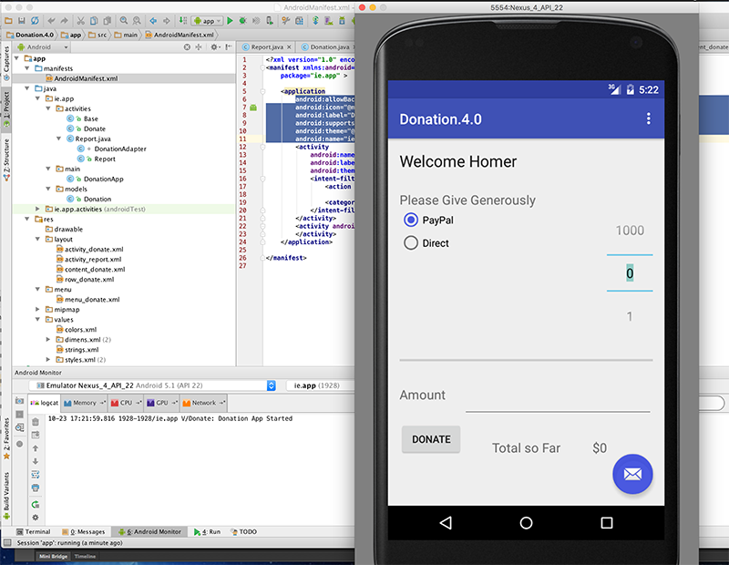
We now need to refactor the Base class (next Step) and move the donation related attributes and method (i.e. the variables target, totalDonated and the donations list, and the newDonation() method) into our DonationApp class.
This is a revised version of DonationApp - which now manages a list of donations. It also centralises the 'makeDonation' event implementing it as a method. Replace your donation with this one:
package ie.app.main;
import java.util.ArrayList;
import java.util.List;
import android.app.Application;
import android.util.Log;
import android.widget.Toast;
import ie.app.models.Donation;
public class DonationApp extends Application
{
public final int target = 10000;
public int totalDonated = 0;
public List <Donation> donations = new ArrayList<Donation>();
public boolean newDonation(Donation donation)
{
boolean targetAchieved = totalDonated > target;
if (!targetAchieved)
{
donations.add(donation);
totalDonated += donation.amount;
}
else
{
Toast.makeText(this, "Target Exceeded!", Toast.LENGTH_SHORT).show();
}
return targetAchieved;
}
@Override
public void onCreate()
{
super.onCreate();
Log.v("Donation", "Donation App Started");
}
}The Base activity can now be completely refactored to make use of the DonationApp object. You WILL have errors at the end of this step, due to referencing our (as yet missing) database classes - but we'll fix those in the next few steps.
This is our new Base class
package ie.app.activities;
import android.content.Intent;
import android.support.v7.app.AppCompatActivity;
import android.view.Menu;
import android.view.MenuItem;
import android.os.Bundle;
import ie.app.R;
import ie.app.main.DonationApp;
public class Base extends AppCompatActivity {
public DonationApp app;
@Override
protected void onCreate(Bundle savedInstanceState) {
super.onCreate(savedInstanceState);
app = (DonationApp) getApplication();
app.dbManager.open();
app.dbManager.setTotalDonated(this);
}
@Override
protected void onDestroy() {
super.onDestroy();
app.dbManager.close();
}
@Override
public boolean onCreateOptionsMenu(Menu menu)
{
getMenuInflater().inflate(R.menu.menu_donate, menu);
return true;
}
@Override
public boolean onPrepareOptionsMenu (Menu menu){
super.onPrepareOptionsMenu(menu);
MenuItem report = menu.findItem(R.id.menuReport);
MenuItem donate = menu.findItem(R.id.menuDonate);
MenuItem reset = menu.findItem(R.id.menuReset);
if(app.dbManager.getAll().isEmpty())
{
report.setEnabled(false);
reset.setEnabled(false);
}
else {
report.setEnabled(true);
reset.setEnabled(true);
}
if(this instanceof Donate){
donate.setVisible(false);
if(!app.dbManager.getAll().isEmpty())
{
report.setVisible(true);
reset.setEnabled(true);
}
}
else {
report.setVisible(false);
donate.setVisible(true);
reset.setVisible(false);
}
return true;
}
public void report(MenuItem item)
{
startActivity (new Intent(this, Report.class));
}
public void donate(MenuItem item)
{
startActivity (new Intent(this, Donate.class));
}
public void reset(MenuItem item) {}
}Once you import the necessary Database classes, (to fix the errors from the previous step) this step is relatively straight forward - all you have to do is replace the method calls that manages the donationList with the respective dbManager calls.
First thing to do is download the necessary database classes in the database archive and add them to a new ie.app.database package in your project.
Take a few moments to investigate the classes and familarise yourself with the methods you'll be using.
There are a few classes you'll need to modify to add database support to your project, but initially, you need to create an instance of DBManager in Base.java and both open/close the database when necessary, so refer to the Lecture Material to complete this.
Next, update your DonationApp class with the following:
public class DonationApp extends Application
{
public final int target = 10000;
public int totalDonated = 0;
//public List <Donation> donations = new ArrayList<Donation>();
public DBManager dbManager;
public boolean newDonation(Donation donation)
{
boolean targetAchieved = totalDonated > target;
if (!targetAchieved)
{
dbManager.add(donation);
totalDonated += donation.amount;
}
else
{
Toast.makeText(this, "Target Exceeded!", Toast.LENGTH_SHORT).show();
}
return targetAchieved;
}
@Override
public void onCreate()
{
super.onCreate();
Log.v("Donate", "Donation App Started");
dbManager = new DBManager(this);
Log.v("Donate", "Database Created");
}
}Note the references to a new dbManager object.
Also, our Donation class needs a slight refactor, so replace the current class with this one.
public class Donation
{
public int id;
public int amount;
public String method;
public Donation (int amount, String method)
{
this.amount = amount;
this.method = method;
}
public Donation ()
{
this.amount = 0;
this.method = "";
}
public String toString()
{
return id + ", " + amount + ", " + method;
}
}Once you make these changes, commenting out the donationList List, (and save the file) you'll get a number of errors, which actually indicates which classes you need to now update and add the database calls (and remove the donationList calls).
Each error requires only one line of code to be fixed, so have a go and updating each of the classes (and we'll have a look at the solution near the end of the Practical Lab).
Once you fix all the errors, and run the app again, you should still be able to make donations - but this time those donations are stored in a database.
And as a final check, if you shut down the app and restart it again, you should still be able to see the donations Report.
The last step in this lab involves deleting all the donations in the database when the user wishes to 'Reset'.
There's actually not a lot required in this step - all you need to do is call reset() on your database object when the user selects the Menu option, so modify your reset method (in your Donate.java) as follows:
@Override
public void reset(MenuItem item)
{
app.dbManager.reset();
app.totalDonated = 0;
amountTotal.setText("$" + app.totalDonated);
}You also need to update your onPrepareOptionsMenu() method in your Base class to handle the 'Reset' menu option being disabled/displayed properly, so refer to the lecture material for this.
That's about it really - with one exception. There's a small bug in the app related to when the app restarts and the target HAS NOT been reached.
Can you find it, and more importantly, fix it?
As an exercise of sorts, you should become familiar with the Android Device Monitor, particularly how it relates to viewing your database on the emulator/device.
In Android Studio, you launch the Android Device Monitor as follows:
Tools->Android->Android Device Monitor (as below)
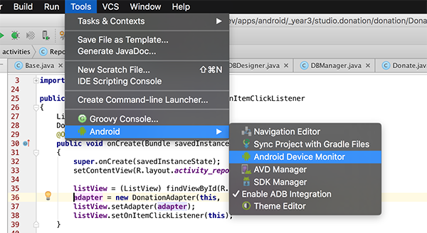
Next, you need to navigate to the data/data folder within the application package on the device (in our case ie.app) like so:
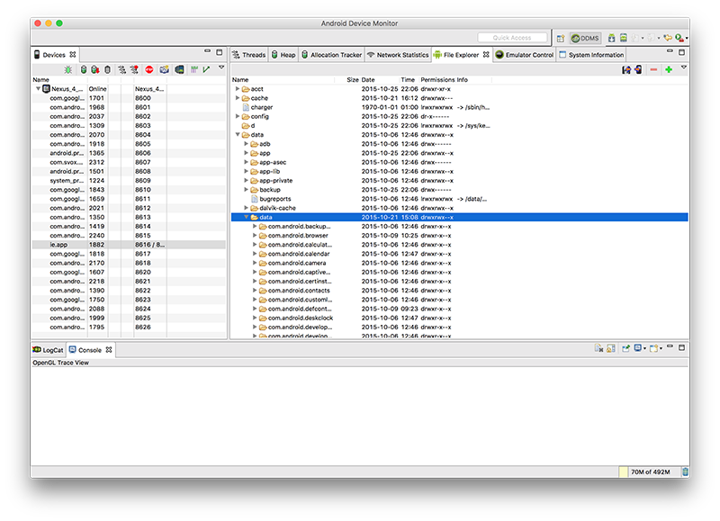
Then, scroll/find your database (donations.db) in the ie.app.databases folder:
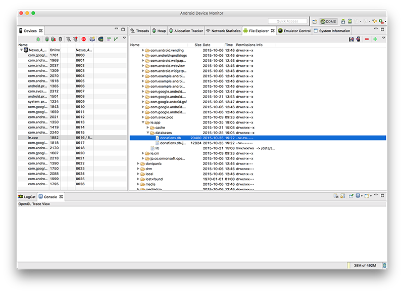
Select the "Pull a file from the Device" on the top right-hand-side of the window:
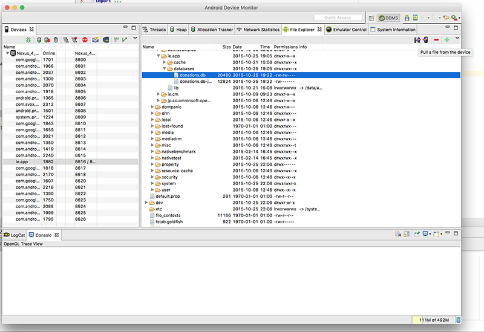
and save your database file to a local folder.
Next download and install sqlitebrowser which will allow us to view our database graphically.
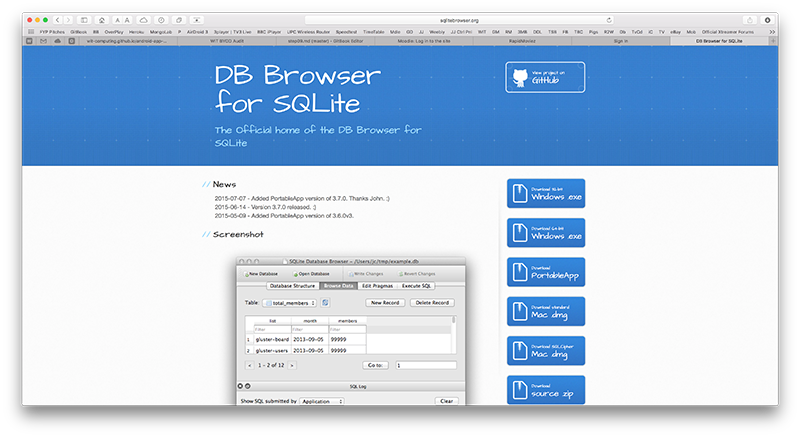
Launch your sqlitebrowser app/program to get this window:
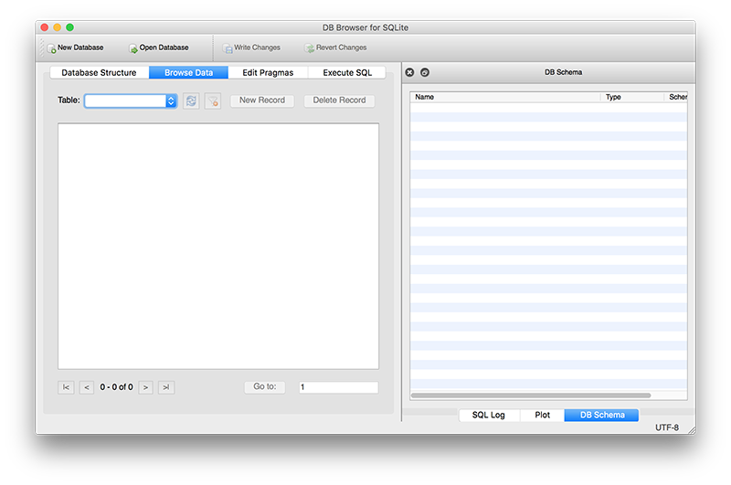
and then 'Open Database' selecting the database you pulled from the device. If everything goes to plan, you should be able to view your database table(s) and their content, as well as the SQL that created the tables.
Below, we can see a donations table with 3 donations
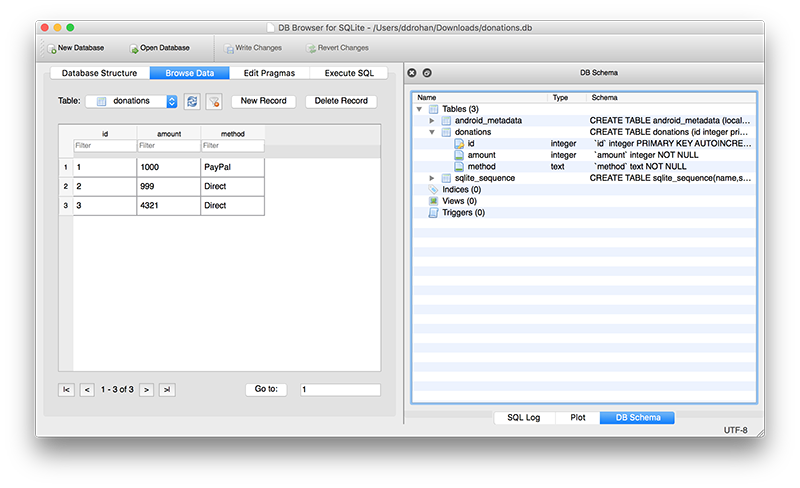
and the corresponding entries in our Android App.
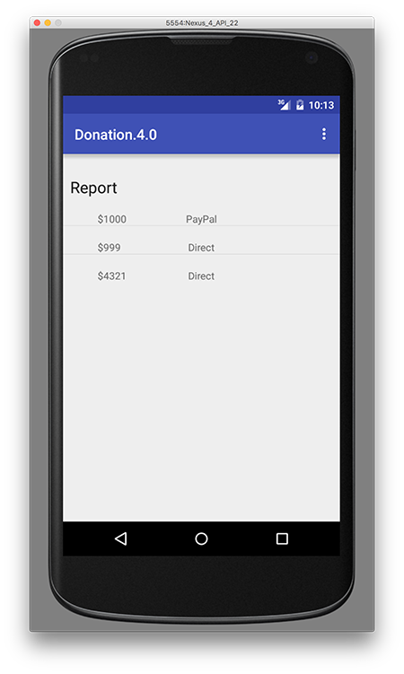